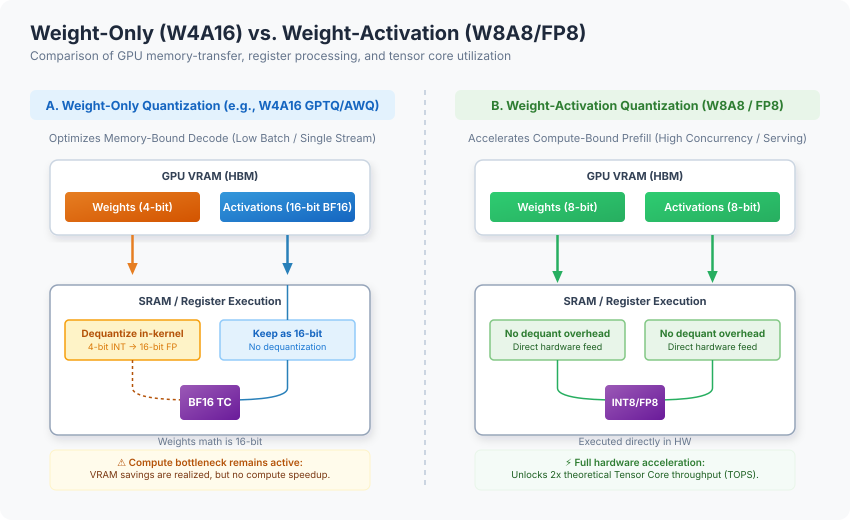
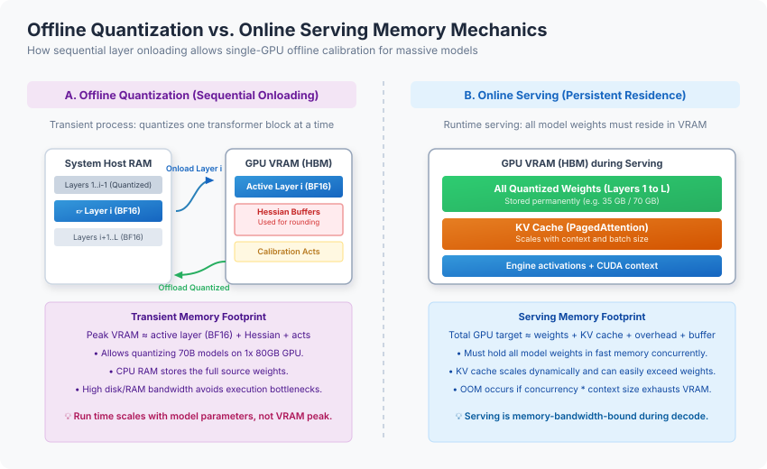

Model Quantization in 2026: From Foundations to Nuance
Deploying modern large language models (LLMs) and high-resolution generative image architectures exposes a fundamental physical bottleneck in modern deep learning infrastructure: memory bandwidth. While training typically happens in 16-bit formats like BF16, running inference at scale in these standard precisions requires prohibitive hardware resources. A dense 70B parameter model in BF16 requires roughly 140 GB of GPU memory just to load the weights, forcing multi-GPU setups before accounting for context memory or concurrent users.
Quantization is the primary lever to break this bottleneck. By mapping continuous high-precision floating-point representations to discrete, lower-bit formats (such as 8-bit or 4-bit configurations), you can run larger models on smaller, cheaper GPUs and unlock substantially higher peak compute throughput.
TL;DR: Choose model precision based on your hardware and concurrency target. For high-throughput server inference on modern Hopper/Ada hardware, use FP8 weight-activation (W8A8) quantization. For memory-bound, single-stream, or edge deployments, default to 4-bit weight-only (W4A16) methods like AWQ or GPTQ. For diffusion or Diffusion Transformer (DiT) models, use selective component-level quantization to keep sensitive layers (VAEs, text encoders) in high precision, and use SVDQuant/Nunchaku for 4-bit visual generation on local workstations.
1. Mathematical Foundations and Numerical Formats
To understand how quantization works, you must analyze the relationship between dynamic range (the span of representable numbers) and precision (the step size between neighboring values).
Quantization maps a continuous set of float values \(x \in [\beta, \alpha]\) to a discrete grid of integer or low-precision float values. The conversion utilizes two main strategies:
- Symmetric Quantization: Centers the scale symmetrically around zero, setting the zero point to \(0\). This simplifies matrix multiplication kernels but can cause excessive clipping if the distribution is skewed: $\(s = \frac{\max(|x|)}{q_{\max}}\)$ $\(x_q = \text{clip}\left(\text{round}\left(\frac{x}{s}\right), q_{\min}, q_{\max}\right)\)$
- Asymmetric Quantization: Calculates a shifting zero-point (\(z\)) to utilize the full bit range more effectively, at the cost of minor computational overhead: $\(s = \frac{\alpha - \beta}{q_{\max} - q_{\min}}\)$ $\(z = \text{round}\left(\frac{-\beta}{s}\right) + q_{\min}\)$ $\(x_q = \text{clip}\left(\text{round}\left(\frac{x}{s}\right) + z, q_{\min}, q_{\max}\right)\)$
The 2026 Precision Landscape
The industry has settled on a multi-tiered precision matrix, varying by bit-width and execution hardware:
- bfloat16 (BF16): Allocates 8 bits to the exponent and 7 bits to the mantissa, matching the dynamic range of FP32. It is the default format for modern training and base model releases because its wide range prevents gradient underflow and overflow.
- FP16: Allocates 5 bits to the exponent and 10 bits to the mantissa. While it provides higher precision than BF16, its narrower exponent range makes it highly susceptible to overflow during activation spikes.
- FP8 (8-bit Floating Point): The modern server serving standard. It exists in two Open Compute Project (OCP) formats:
- E4M3 (1 sign, 4 exponent, 3 mantissa bits): Prioritizes precision. It is the default choice for forward-pass weights and activations.
- E5M2 (1 sign, 5 exponent, 2 mantissa bits): Matches FP16's dynamic range. It is used primarily for gradients and highly volatile activation layers.
- INT8 / INT4: Fixed-point integer formats. INT8 provides a \(2\times\) memory reduction but lacks floating-point scale flexibility. INT4 represents only 16 discrete values, yielding a \(4\times\) weight footprint reduction over BF16 but introducing noticeable noise in math-heavy reasoning workloads.
- Microscaling Formats (MXFP8 / NVFP4): A major architectural shift popularized by the NVIDIA Blackwell architecture. Elements are grouped into small blocks (e.g., 16 or 32 values) that share a high-precision scale factor.
- NVFP4: Stores one 4-bit value plus a shared FP8 scale per 16 values (averaging ~4.5 bits per value), along with a second-level FP32 per-tensor scaling factor. This reduces the weight memory footprint by roughly \(3.5\times\) relative to FP16 and \(1.8\times\) compared to FP8, with less than 1% accuracy degradation on frontier reasoning tasks.
2. The Core Decision Axis: Weight-Only vs. Weight+Activation
The notation WxAy (where \(x\) represents weight bit-width and \(y\) represents activation bit-width) defines the execution profile of a quantized model. Choosing between weight-only and weight-activation quantization determines whether you are optimizing for memory capacity or compute throughput.

Weight-Only Quantization (W8A16 / W4A16)
In weight-only configurations, weights are stored in low precision (4-bit or 8-bit), but activations are kept in 16-bit (BF16/FP16). During inference, weights are transferred from high-bandwidth memory (HBM) to SRAM and dynamically dequantized back to 16-bit within the kernel before computation.
- Best fit: Memory-bandwidth-bound workloads. This includes the autoregressive decode phase, low batch sizes, single-stream local inference, or long contexts where memory transfer is the primary bottleneck.
- Limitation: The actual matrix multiplication still runs in 16-bit. You do not gain compute speedups on Tensor Cores; you only save memory transfer time.
Weight-Activation Quantization (W8A8 / W4A4)
Both weights and activations are quantized to low precision. This allows weights and activations to go directly to Tensor Cores without runtime dequantization overhead.
- Best fit: Compute-bound workloads. This includes the prefill phase, high concurrency serving, large batch sizes, and continuous batching in server environments.
- Limitation: Activations are highly volatile. Quantizing them requires advanced methods to handle outlier channels, and running the wrong precision format on unsupported hardware triggers silent in-kernel dequant fallbacks, forfeiting any throughput gains.
3. Transient Offline Quantization vs. Serving Memory Mechanics
A common point of confusion is how much VRAM you need to produce a quantized model versus how much you need to serve it. The peak VRAM requirements for these two tasks behave differently.

Offline Quantization (Sequential Onloading)
When running quantization toolkits like llm-compressor, the process is executed layer-by-layer (a technique known as sequential onloading). The engine loads one transformer block into GPU memory, runs the calibration data through it to compute scale factors and inverse Hessians, writes out the quantized block, and frees it before loading the next block.
- Peak VRAM: \(\text{GPU Peak} \approx \text{Size of largest layer (BF16)} + \text{Hessian buffers} + \text{calibration activation buffers}\).
- Practical consequence: You can quantize a 70B model on a single 80GB (or even 48GB) GPU, provided your host system has enough DDR5 RAM (~256 GB) to hold the unquantized weights in the background.
Online Serving (Persistent Residence)
At serve time, the entire model must reside permanently in GPU VRAM to maintain low-latency token generation.
- Total GPU Serving VRAM: $\(\text{VRAM}_{\text{serve}} \approx \text{Quantized Weights} + \text{KV Cache} + \text{Runtime Activations} + \text{Engine Overhead}\)$
- Practical consequence: The serving footprint can easily exceed the offline quantization peak. A 70B model quantized to W4A16 needs ~35 GB for weights, but serving it under heavy concurrent load with a long context can push VRAM usage past 80 GB due to KV cache growth.
4. Deep Dive: Quantization Algorithms
Not all algorithms handle precision reduction in the same way. The table below outlines the 2026 landscape of quantization algorithms:
| Algorithm | Common Format | Primary Objective | Trade-off / Limitation | Status |
|---|---|---|---|---|
| GPTQ | W4A16 | Minimizes layer-wise reconstruction error using inverse Hessian info. | High calibration time (hours). Uses sequential column rounding. | Production default for W4A16 |
| AWQ | W4A16 / W4A8 | Protects the top 1% of salient weight channels based on activation scale. | Requires activation scaling; relies on specialized fused kernels. | Production default for W4A16 |
| SmoothQuant | W8A8 | Migrates quantization difficulty from activations to weights. | Only goes down to 8-bit. Requires scaling strength tuning. | Production option for INT8 |
| SpinQuant / QuaRot | W4A4 / W4A8 | Applies orthogonal rotation matrices to eliminate activation outliers. | Fuses rotations offline. Requires online Hadamard transforms. | State-of-the-art for low-bit |
| HQQ | W4A16 / W2A16 | Fast optimization of reconstruction error without calibration data. | Higher perplexity than AWQ/GPTQ at very low bit-widths. | Good for data-free runs |
| bitsandbytes (NF4) | W4A16 | Optimal representation for normally distributed base model weights. | Slow serving kernels; primarily optimized for QLoRA fine-tuning. | Prototyping and PEFT only |
| GGUF (IQ-Quants) | Mixed low-bit | Uses importance matrices to apply non-uniform bit-widths across layers. | Relies on CPU-offload runtimes. Inefficient for high concurrent serving. | Desktop, CPU & Edge |
Rotation Methods: SpinQuant and QuaRot
To push below 8-bit activations (e.g., W4A4), standard PTQ fails because activation outliers collapse the grid. QuaRot and SpinQuant exploit computational invariance: they multiply the weight matrices and activations by orthogonal (Hadamard) rotation matrices. This mathematically preserves the output while smoothing out outlier channels into a uniform, near-Gaussian distribution that quantizes cleanly to 4-bit. SpinQuant optimizes these rotation matrices on the Stiefel manifold, achieving near-lossless W4A4 performance on 70B models.
5. Servicing Bottlenecks: The KV Cache
For long-context models (e.g., 32K to 128K tokens), VRAM consumption is dominated by the Key-Value (KV) cache during autoregressive decoding. The formula for the KV cache footprint in bytes is:
Where: * \(L\) = Number of layers * \(H_{\text{kv}}\) = Number of KV heads (Grouped-Query Attention reduces this by \(8\times\)) * \(D\) = Head dimension * \(S_{\text{ctx}}\) = Context window size in tokens * \(B_{\text{batch}}\) = Serving batch size * \(\text{BytesPerParam}\) = \(2.0\) for BF16, \(1.0\) for FP8, and \(0.5\) for FP4
For example, a single request to Llama 3.3 70B at a 128K context window consumes roughly 32.7 GB of VRAM for the KV cache in BF16. Concurrent serving of just 4 requests requires 130.8 GB for the cache alone—far exceeding the weight footprint of the model.
Mitigation Strategies
- FP8 KV Cache: Halves the VRAM requirements. Implementing a two-level accumulation strategy (e.g., SageAttention2) recovers accuracy from 13% up to 89% on long-context needle-in-a-haystack evaluations.
- PagedAttention: Treats GPU memory like virtual memory pages, dynamically allocating 16 or 32 token blocks only as needed. This eliminates internal fragmentation, increasing serving capacity by up to \(3\times\).
6. Sparsification and Structured Pruning
Quantization reduces bit-width; sparsification removes weights entirely.
2:4 Structured Sparsity
Unstructured pruning (zeroing out arbitrary weights) fails to yield hardware speedups because memory controllers must still load the zero elements. NVIDIA's 2:4 structured sparsity requires exactly two out of every four consecutive weights in a row to be zero. Sparse Tensor Cores bypass these zero values at the hardware level, doubling matrix multiplication throughput and compressing weight storage by \(2\times\).
Dense Weights: [ 0.4, 0.0, -0.8, 0.2 ] -> (Requires 4 operations)
2:4 Sparse Weights: [ 0.4, 0.0, -0.8, 0.0 ] -> (Executes in 2 hardware cycles)
To enforce 2:4 patterns post-training, two algorithms are commonly deployed: * SparseGPT: Minimizes reconstruction error using inverse Hessian information. It is accurate but computationally expensive (demanding ~80GB VRAM for a 70B run). * Wanda (Weights and Activations): Prunes weights based on a simple score: the product of the weight magnitude and the \(L_2\) norm of the input activations. Wanda requires no Hessian calculations, running \(5\times\) to \(10\times\) faster than SparseGPT with half the peak memory usage.
SlideSparse
Enforcing a strict 2:4 sparsity pattern on newer models can degrade reasoning performance (e.g., dropping average math accuracy on Qwen3 models from 78% to 45%). SlideSparse addresses this by using Sliding Window Decomposition to map arbitrary structured patterns (like 6:8 or 4:6) onto native 2:4 hardware. By decomposing the weight matrix offline and duplicating ("lifting") activations online during token quantization, SlideSparse retains accuracy while achieving up to 1.7x hardware speedups.
7. Quantization in Generative Image Models
Quantizing diffusion and Diffusion Transformer (DiT) models presents different architectural challenges than autoregressive LLMs.
Timestep-Dependent Activation Drift
Unlike LLMs, diffusion models run recursively over \(N\) denoising steps. Quantization errors accumulate across these steps. More importantly, activation distributions shift dramatically over the denoising trajectory (often exhibiting bimodal shapes during early steps and uniform shapes later).
Naive PTQ causes immediate visual artifacts or total image collapse. Algorithms like Q-Diffusion address this with timestep-aware calibration sampling and split shortcut quantization.
Component-Level Selective Quantization
In production pipelines (like FLUX.1 or Stable Diffusion 3.5), uniform quantization is avoided. Instead, selective quantization is applied based on component sensitivity: * Transformer / DiT Blocks: Quantize well (e.g., to FP8 or INT4) and yield the highest compute and memory savings. * VAE (Variational Autoencoder): Retained in high precision (BF16/FP32). The VAE decoder is highly sensitive; quantizing it causes immediate color banding and texture warping. * Text Encoders (T5-XXL / CLIP-L): Quantized selectively. Keeping them in FP8 or GGUF Q8 maintains prompt alignment while saving VRAM.
SVDQuant and Nunchaku
For local workstations, SVDQuant (implemented in the Nunchaku engine) is the state-of-the-art W4A4 execution format. It addresses the activation outlier problem by splitting the computation: 1. A high-precision low-rank branch (SVD) processes outlier dimensions. 2. A 4-bit branch processes the residuals.
Nunchaku fuses the SVD branch directly into the 4-bit kernels, adding minimal latency. For the 12B parameter FLUX.1-dev model, SVDQuant reduces the transformer footprint from 23.8 GB (BF16) to 6.1 GB (INT4). This allows the entire pipeline (including T5 text encoders) to run un-offloaded on a single 16GB laptop GPU, delivering an \(8.7\times\) speedup by eliminating slow CPU offloading.
8. Sizing and Selection Guide
Use the following heuristics to select your deployment precision and hardware footprint.
flowchart TD
A[Start: Define Deployment Goal] --> B{Need fine-tuning or training?}
B -- Yes --> C[Use QLoRA / bitsandbytes NF4]
B -- No --> D{What is the primary constraint?}
D -- VRAM Capacity / Edge --> E{Hardware Architecture}
D -- High Serving Throughput --> F{Hardware Architecture}
E -- CPU / Apple Silicon --> G[Export to GGUF / llama.cpp]
E -- Ampere / Ada / Hopper GPU --> H[Quantize to W4A16 via llm-compressor]
F -- Legacy GPU < Ampere --> I[Use INT8 SmoothQuant W8A8]
F -- Hopper / Ada GPU --> J[Use FP8 Dynamic W8A8 + FP8 KV Cache]
F -- Blackwell GPU --> K[Use NVFP4 / MXFP8 Microscaling]
H --> L[Serve via vLLM with Marlin/Machete kernels]
J --> L
K --> LWeights-Only VRAM Footprint (\(2\times\) safety headroom recommended for serving)
| Model Size | BF16 (Weights) | FP8/INT8 (Weights) | INT4 (Weights) |
|---|---|---|---|
| 7B / 8B | ~14 - 16 GB | ~7 - 8 GB | ~3.5 - 4 GB |
| 14B | ~28 GB | ~14 GB | ~7 GB |
| 32B / 34B | ~64 - 68 GB | ~32 - 34 GB | ~16 - 17 GB |
| 70B | ~140 GB | ~70 GB | ~35 GB |
| 109B (MoE) | ~218 GB | ~109 GB | ~55 GB |
Production GPU Provisioning Matrix
| Target Model | Quantization Format | Target Hardware | Min Serving GPUs (Low Concurrency) | VRAM Sizing Notes |
|---|---|---|---|---|
| Llama 3.1 8B | W4A16 AWQ | RTX 4090 (24GB) / L4 | 1x GPU | Fits comfortably with large KV cache headroom. |
| Phi-4 14B | FP8 Dynamic | RTX 5090 (32GB) / L40S | 1x GPU | High-throughput edge serving with low latency. |
| Qwen 3 32B | W4A16 GPTQ | RTX 4090 (24GB) | 1x GPU | Tight fit; limit batch size and context window. |
| Llama 3.3 70B | FP8 Dynamic | 2x H100 (80GB) / 1x H200 | 2x GPUs (or 1x H200) | FP8 Tensor Cores yield optimal serving throughput. |
| DeepSeek V3 (671B) | FP8 Dynamic | 8x H100 (80GB) | 8x GPUs (1 node) | Server-grade MoE deployment; requires pipeline parallelism. |
| FLUX.1-dev (12B) | INT4 SVDQuant | RTX 4090 (24GB) / Laptop 4090 | 1x GPU (Consumer) | Eliminates CPU offload; runs transformer in ~6.1 GB. |
9. Implementation Recipes from model-compression-demo
The following code snippets are sourced from the local reference implementation slavadubrov/model-compression-demo. You can use the runnable demo.py utility to generate recipes, estimate footprints, and run validation tests.
1. llm-compressor W4A16 GPTQ Quantization
Use this recipe to produce a compressed-tensors checkpoint optimized for vLLM:
# Sourced from compression_demo/recipes.py
from llmcompressor import oneshot
from llmcompressor.modifiers.quantization import GPTQModifier
# Configure GPTQ W4A16, ignoring the language model head to preserve perplexity
recipe = GPTQModifier(
scheme="W4A16",
targets="Linear",
ignore=["lm_head"],
)
oneshot(
model="Qwen/Qwen3-0.6B",
dataset="wikitext",
dataset_config_name="wikitext-2-raw-v1",
recipe=recipe,
output_dir="outputs/Qwen3-0.6B-W4A16",
max_seq_length=4096,
num_calibration_samples=256,
)
2. llm-compressor FP8 Dynamic serving
Best default for high-throughput serving on Ada and Hopper architectures. It quantizes weights per-channel statically and activations per-token dynamically:
# Sourced from compression_demo/recipes.py
from llmcompressor import oneshot
from llmcompressor.modifiers.quantization import QuantizationModifier
from transformers import AutoModelForCausalLM, AutoTokenizer
model_id = "Qwen/Qwen3-0.6B"
model = AutoModelForCausalLM.from_pretrained(model_id, device_map="auto")
tokenizer = AutoTokenizer.from_pretrained(model_id)
recipe = QuantizationModifier(
targets="Linear",
scheme="FP8_DYNAMIC",
ignore=["lm_head"],
)
oneshot(model=model, recipe=recipe)
model.save_pretrained("outputs/Qwen3-0.6B-FP8-Dynamic", save_compressed=True)
tokenizer.save_pretrained("outputs/Qwen3-0.6B-FP8-Dynamic")
3. vLLM Serving command
Launch your compressed checkpoint with vLLM, enabling FP8 KV cache and Prefix Caching:
# Sourced from compression_demo/recipes.py
vllm serve ./outputs/Qwen3-0.6B-FP8-Dynamic \
--quantization fp8 \
--kv-cache-dtype fp8 \
--max-model-len 32768 \
--enable-prefix-caching
Key Takeaways
- Select for your hardware constraint: Use FP8 (W8A8) for serving on Hopper/Ada GPUs to double compute throughput. Use W4A16 (AWQ/GPTQ) for memory-bound edge or single-GPU deployments.
- Separate offline from online memory sizing: Quantization is transiently memory-efficient because it runs layer-by-layer (sequential onloading). Serving is memory-resident and requires permanent GPU VRAM allocation.
- Treat the KV cache as a first-class citizen: For contexts \(>8\text{K}\), the KV cache memory footprint can exceed the model weights. Quantize the cache to FP8 and use PagedAttention to prevent OOM errors.
- Avoid uniform quantization for diffusion: Diffusion models have time-step dependent activations. Keep the VAE and text encoders in high precision, and only quantize the main Transformer/DiT backbone.
References
- GPTQ: Frantar et al., GPTQ: Accurate Post-Training Quantization for Generative Pre-trained Transformers, arXiv:2210.17323.
- AWQ: Lin et al., AWQ: Activation-aware Weight Quantization for LLM Compression and Acceleration, MLSys 2024.
- SmoothQuant: Xiao et al., SmoothQuant: Accurate and Efficient Post-Training Quantization for INT8 LLM Inference, arXiv:2211.10438.
- QuaRot: Ashkboos et al., QuaRot: Outlier-Free 4-Bit Inference in Rotated LLMs, NeurIPS 2024.
- SpinQuant: Meta AI Research, SpinQuant: LLM Quantization with Learned Rotations, arXiv:2405.16406.
- SVDQuant / Nunchaku: MIT HAN Lab, SVDQuant: Absorbing Outliers with Low-Rank Branch for 4-Bit Diffusion Models, ICLR 2025.
- vLLM PagedAttention: Kwon et al., Efficient Memory Management for Large Language Model Serving with PagedAttention, SOSP 2023.
- LLM serving Evaluation: Kurtic et al., Give Me BF16 or Give Me Death: Empirical Evaluations on LLM Quantization, ACL 2025.
- Reasoning Evaluation: Quantization Hurts Reasoning? An Experimental Analysis up to 405B, arXiv:2504.04823.
- Reference Repository: slavadubrov/model-compression-demo.